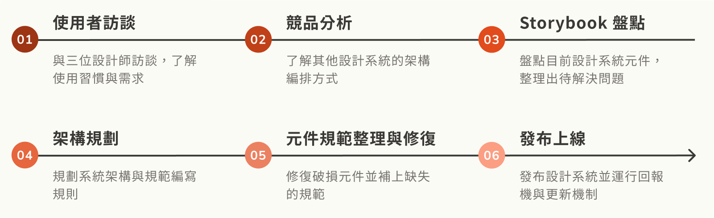
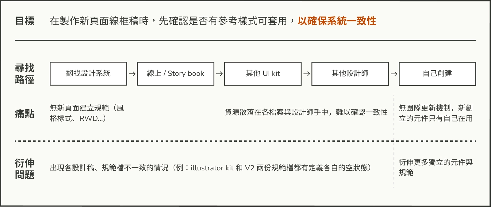
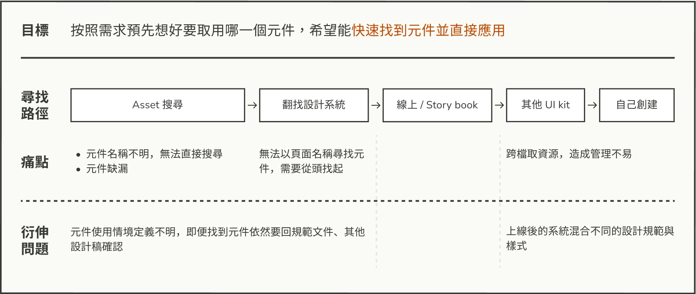

本次重設系統為 SHOPLINE 電商產品線的 V2.0 設計系統，用於 B 端產品後台管理頁面，提供網店設計和訂單處理等功能，是主要設計系統之一。
目前該系統以 Figma 文件構建，供設計師和工程師使用。但由於缺乏完整的管理方式和使用規範，且部分元件來自 Sketch 轉檔，導致元件使用情境不明、Figma 元件破損、查找困難，降低了效率並影響設計一致性。


本次重設系統為 SHOPLINE 電商產品線的 V2.0 設計系統，用於 B 端產品後台管理頁面，提供網店設計和訂單處理等功能，是主要設計系統之一。

元件缺失與命名不統一，導致無法通過搜尋找到所需元件，加上情境定義不明，設計師每次使用元件時都需回到設計系統主文件中查找。


現行設計系統採用元件與規範並行歸檔，導致內容重複。例如，名為 Flow 的文件記錄了所有元件的互動方式（如：menu bar 的互動模式），同時還有各元件規格（如：menu bar 的顏色規範），分屬不同頁面且部分重複。

各元件頁面的規範沒有統一的書寫規則，缺乏情境定義，基本樣式、狀態、互動方式等要素也不完整，無法在文件中找到完整規範。

產品中的元件大致分為 V2 原版、工程師自創版、設計師自創版和其他 UI kit 四種。這些版本缺乏明確的溝通和更新機制，導致 V2 設計系統無法及時更新元件與規範，變得過時。

重整設計系統在 figma 檔案上的邊排方式，讓設計師能快速查找設計規範與使用元件。

提供足夠的引導與說明，讓首次使用本設計系統的使用者可以快速理解用法。

確保在未來不斷增減與修改設計規範時，內容一員能維持完整性與正確性。
根據設計師既有的使用習慣，以維護品質為目標，利用以下架構整理元件:

在 All Component 頁面中存放所有子元件，使用者只需在此頁面尋找並使用所需元件，且子元件的特性可以避免破壞整體設計系統。

在各子元件區域的右上角附上 storybook 和 full guide 的連結，方便使用者查看元件狀態並解決使用疑問。
同時，在 full guide 頁面右上角也附有 storybook 和 all component 的連結，讓使用者在閱讀規範後能回到 all component 頁面，避免直接修改母元件。


規範各元件需包含以下 7 項固定標題：Usage、Spec、Content、Layout、Application、Asset、Components，並明確規定各標題下的內容。


紀錄遇到的元件問題，並指派相關人員進行修正；定期於週會確認待處理的元件問題，並討論解決方案。


通過本次專案，我發現設計系統對產品一致性至關重要。如果設計系統未以『情境』為中心進行規範，Design System 只能作為元件庫，無法提供有效的實作參考。此外，當規範和元件分散在不同文件中時，會增加實作時間成本，最終導致產品設計不一致問題加劇。
不同職位對設計系統的需求也不同，統一的命名影響程式編寫、設計師查找元件及測試時的效率。無效的溝通會導致元件使用不同步，設計師和工程師使用不同元件。因此，各職位間的同步與更新機制對設計系統的維護尤為重要，這不僅關乎設計師，也關乎產品品質。